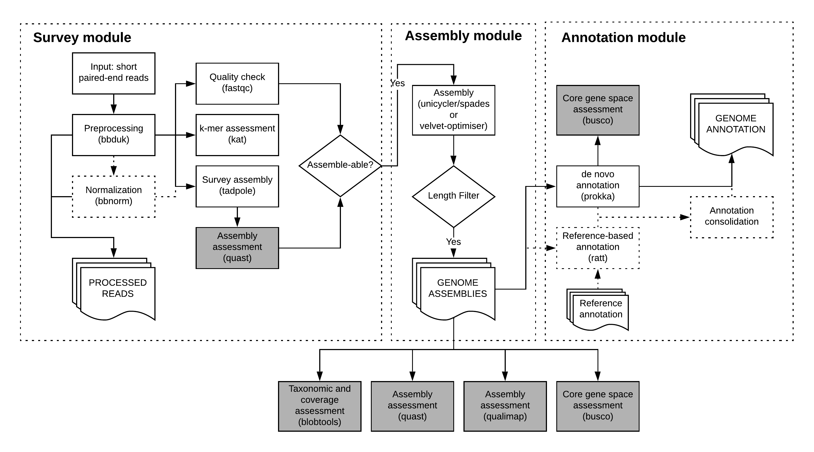

1. Usage¶
1.1. Preparation of sample data¶
bgrr| takes as input a set of paired-end libraries, which need to be passed to the pipeline in form of a samplesheet.
This samplesheet needs to be comma-separated and can be either generated manually (s. below for column format) or with the included create_samplesheet script.
The script takes as argument a directory containing the fastq files (currently with mandatory .fastq.gz suffix) and writes the samplesheet to stdout.
Example usage
create_samplesheet <read_directory> > samplesheet.csv
For manual generation of the samplesheet, please create a comma-separated file following the column order below. Please note that items have to be present unless noted otherwise.
- Sample ID
- Sample Name (can be the same as Sample ID; the intention is to allow a more understandable sample reference in the future)
- Full path to R1 file
- Full path to R2 file
- LEAVE EMPTY (intended use: Full path to single-end file)
- LEAVE EMPTY (intended use: NCBI taxonomy id)
- LEAVE EMPTY (intended use: Taxonomy name)
- LEAVE EMPTY (intended use: FastQC report for raw R1)
- LEAVE EMPTY (intended use: FastQC report for raw R2)
- LEAVE EMPTY (intended use: FastQC report for raw single-end file)
Please note that despite columns 5-10 not being used, bgrr| still expects to see 10 columns at present.
1.2. Preparation of the bgrr| run¶
bgrr| runs are driven by two configuration files, which need to be adapted to your computing environment. Templates are included in the bgrrl/etc directory in the bgrr| source directory.
To copy these files to the current run you can use the bginit command. bginit -o <outdir> will automatically copy the files into the folder <outdir>/config. The copies can then be edited.